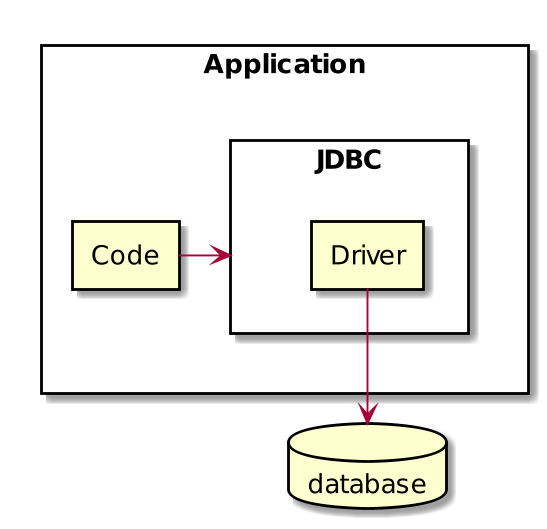
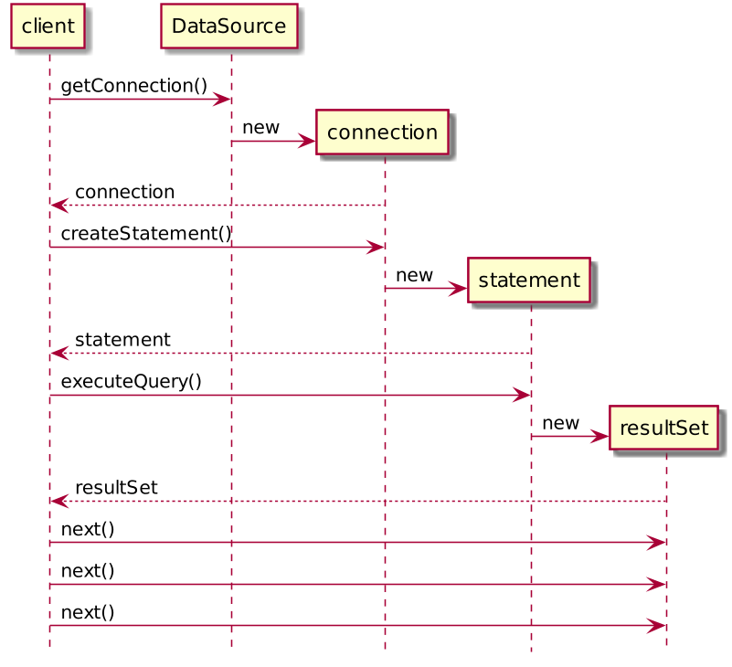
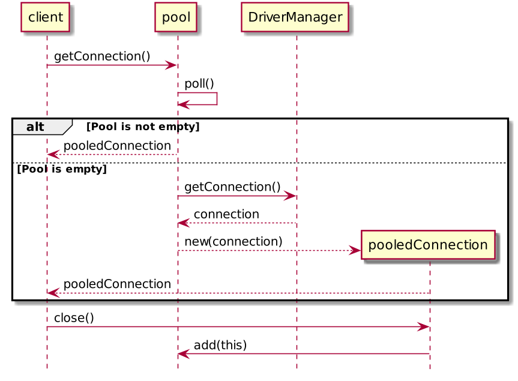
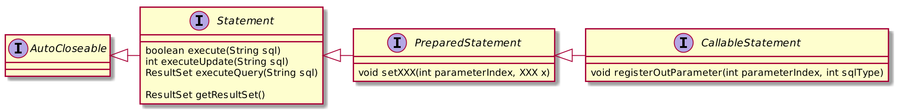
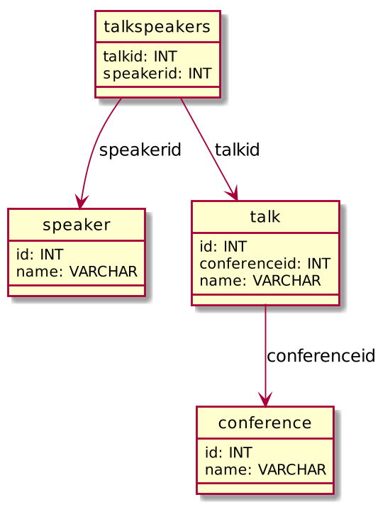
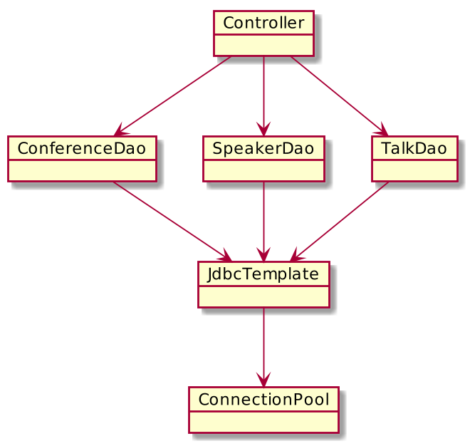
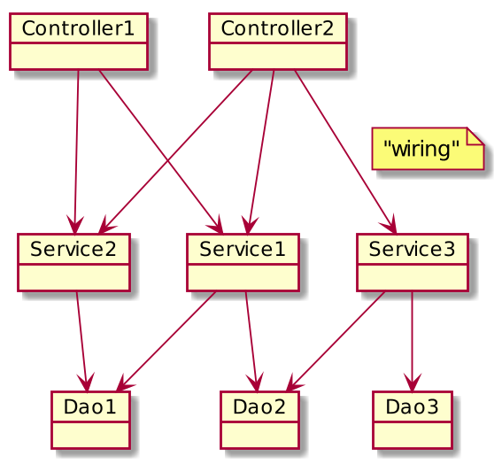

@inponomarev
Ivan Ponomarev, Synthesized.io/MIPT
Existed since the 1970s.
The most common way of storing information in a wide variety of systems.
A wide variety of mature, stable and feature-rich products: IBM DB2, Oracle, MS SQL Server, Postgres, etc. etc.
The SQL language is standardized and varies slightly from system to system.
In modern "big data" realities various NoSQL systems are being used for different tasks, but RDBMS is still the leader in prevalence
"Java Database Connectivity"
Standard API for interaction with relational DBMS
Named after ODBC (Open Database Connectivity) for the C language developed by Microsoft
First version in 1996, current version is 4.3 (2017-09-21)
Actively used for decades

Developed by database vendors or communities
Good databases have stable, high quality drivers
In a manner specific to each driver, specify the server, port, database and other connection parameters:
jdbc:sqlserver://172.16.1.114:52836;databaseName=celesta
jdbc:postgresql://127.0.0.1:5432/celesta
jdbc:oracle:thin:192.168.110.128:1521:XE
jdbc:derby://localhost:1527/corejava;create=true
try (Connection conn = dataSource.getConnection();
Statement stmt = conn.createStatement()){
ResultSet result = stmt.executeQuery("select name from speaker");
while (result.next()) {
System.out.println(result.getString("name"));
}
}What is written in many tutorials, and what you will never do in real life:
String connString = "jdbc:postgresql://127.0.0.1:5432/celesta"
Connection conn = DriverManager.getConnection(connString);Connection is a root object, "entry point" to all the interaction with the DBMS.
Created slowly (network connection with the DBMS, authorization, etc.).
Acquires resources: must be explicitly closed after use.
Tends to "spoil" (to "break" after some time).
Not thread-safe. Thread confinement is needed.
Workaround: connection pooling.

Difficult to implement on your own competently
Provided by your framework / JDBC driver
There is javax.sql.DataSource which is a standard interface for Connection Pool.
DataSource connectionPool = ...
try (Connection conn = connectionPool.getConnection()) {
...
}DataSource) implementationsApache Commons DBCP
Hikari CP
Other frameworks or JDBC drivers (H2, for example)
transaction management
setAutoCommit
commit
rollback
statements creation:
createStatement() — creates a generic object for passing SQL commands
prepareStatement(String sql) — creates a parameterized SQL command template
prepareCall(String sql) — creates a template for calling a stored procedure

int confId = ...
try (PreparedStatement stmt =
conn.prepareStatement(
"select name from talk where conferenceid = ?")) {
//setting the parameter value
//we count parameters starting from one, not zero!!
stmt.setInt(1, confId);
ResultSet result = stmt.executeQuery();
while (result.next()) {
System.out.println(result.getString("name"));
}
}Let’s remember once and for all: you cannot build queries to the database based on the input from the user
WRONG | CORRECT |
| |
sql = "SELECT * FROM users WHERE name = '" + userName + "'"
userName = "' OR '1'='1"
userName = "a';DROP TABLE users;"
//... and many other nasty thingsLet’s write a database for talks at Java conferences
Main entities: at conferences there are speakers with their talks.
It happens that one talk is delivered with more than one speaker.


